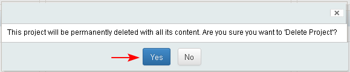
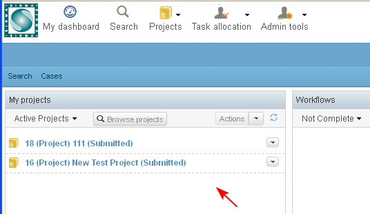

In general an user deletes a project only when he/she has created it by mistake, for example of a wrong type. A project could be deleted only if in status "Submitted".
Preconditions
- Only the creator of a project, an user with the role of "Project Manager" for the project or an user with the role of "Administrator" could delete a project.
- Only projects in state "Submitted" could be deleted. If there are documents, images, tasks, or other objects created in the project they would also be deleted.
- The user who has the permissions to delete the project selects the button "Delete Project" from:
- Project dashboard/ "Delete Project"
- View Project Profile/ Actions/ "Delete Project" (1-2)
- Personal dashboard/ My projects dashlet/ "Delete Project"

- The system displays a confirmation message. The user clicks the button "Yes".

- The project is deleted and the user could not find it and work with it anymore. The user is transferred back to his/her personal dashboard.
